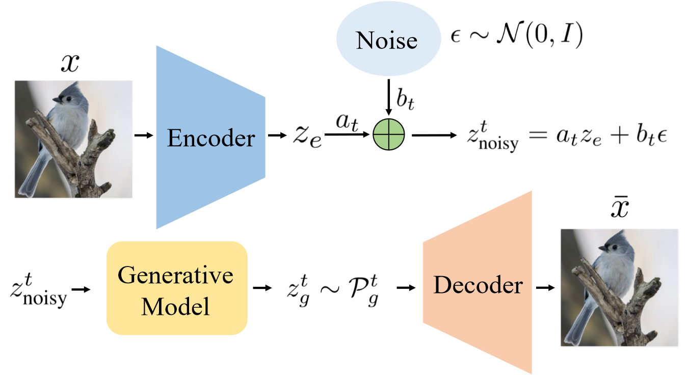
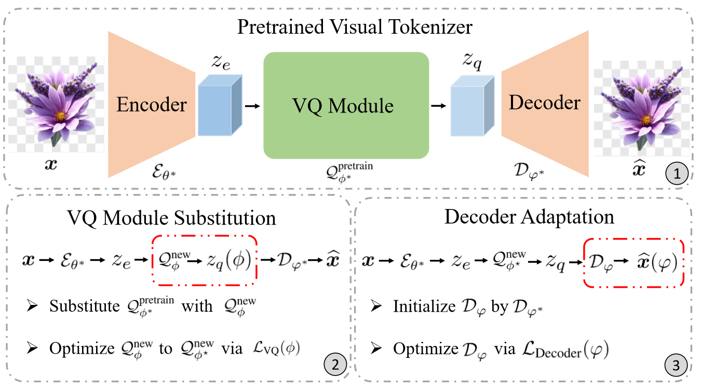
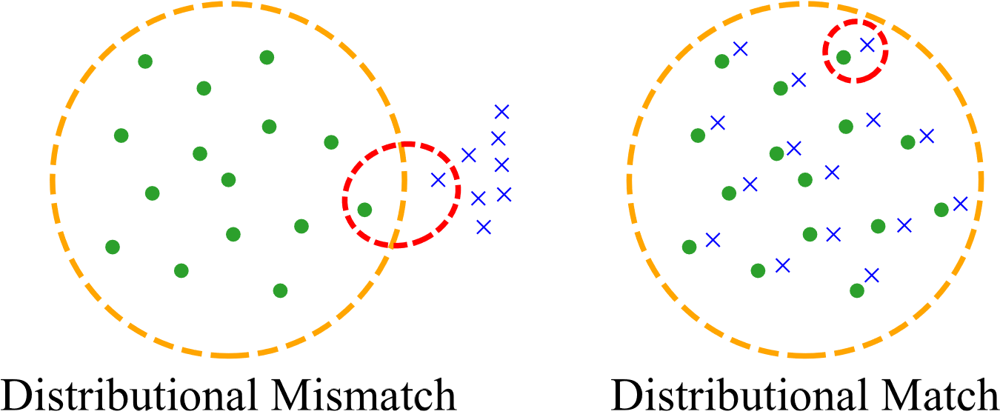
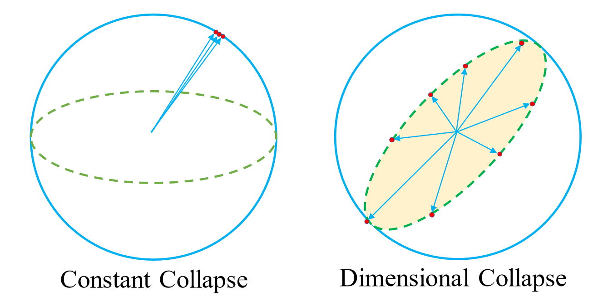
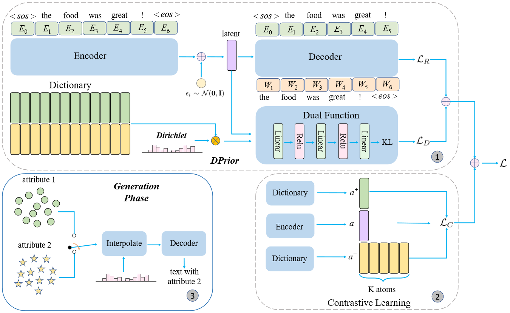
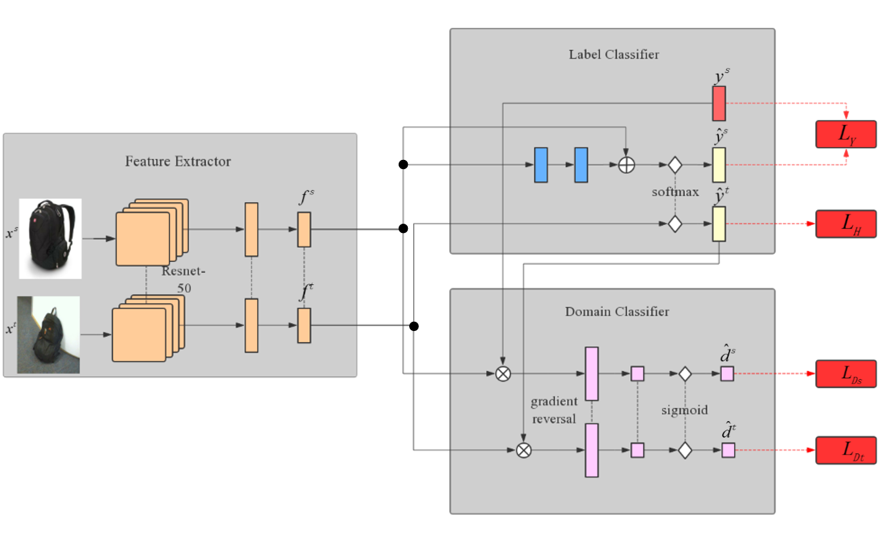

Aligning Reconstruction with Generation: A Latent Distribution Alignment Perspective on Evaluation and Optimization
Under review, 2026
Ph.D. Student in Statistical Sciences, University of Toronto
Email: xianghong.fang@mail.utoronto.ca
Hi! I am a second-year Ph.D. student in Statistics at the University of Toronto. I am very fortunate to be advised by Prof. Dehan Kong and Tim G. J. Rudner. I am also affiliated with the Vector Institute. Prior to my Ph.D. study, I received my Master of Philosophy in Artificial Intelligence from The Hong Kong University of Science and Technology, where I was very fortunate to be advised by Dit-Yan Yeung. I received my bachelor's degree from the University of Electronic Science and Technology of China.
My current research interests center on tokenization, generative modeling, multimodal systems, and agentic AI:
I am open to collaboration on related topics and happy to mentor self-motivated students who are excited about research.

Aligning Reconstruction with Generation: A Latent Distribution Alignment Perspective on Evaluation and Optimization
Under review, 2026

VQ-Transplant: Efficient VQ-Module Integration for Pre-trained Visual Tokenizers
ICLR, 2026
@inproceedings{Fang2026VQTransplant,
title={V{Q}-Transplant: Efficient Plug-and-Play VQ-Module Integration for Pre-trained Visual Tokenizers},
author={Xianghong Fang and Yuan Yuan and Dehan Kong and Tim G. J. Rudner},
booktitle={ICLR},
year={2026},
}

Distributional Matching for Vector Quantization: A Unified Theoretical and Empirical Framework
Under review, 2026


Controlled text generation using dictionary prior in variational autoencoders
ACL Findings, 2022
@inproceedings{Fang2022ControlledTG,
title={Controlled Text Generation Using Dictionary Prior in Variational Autoencoders},
author={Xianghong Fang and Jian Li and Lifeng Shang and Xin Jiang and Qun Liu and Dit-Yan Yeung},
booktitle={ACL},
year={2022},
}

Discrete auto-regressive variational attention models for text modeling
IJCNN, 2021

DART: Domain-adversarial residual-transfer networks for unsupervised cross-domain image classification
Neural Networks, 2020
@article{Fang2020DARTDR,
title={DART: Domain-Adversarial Residual-Transfer Networks for Unsupervised Cross-Domain Image Classification},
author={Xianghong Fang and Haoli Bai and Ziyi Guo and Bin Shen and Steven C. H. Hoi and Zenglin Xu},
journal={Neural networks},
year={2020},
}
Conference: NeurIPS 2025, NeurIPS 2026
Journal: TPAMI